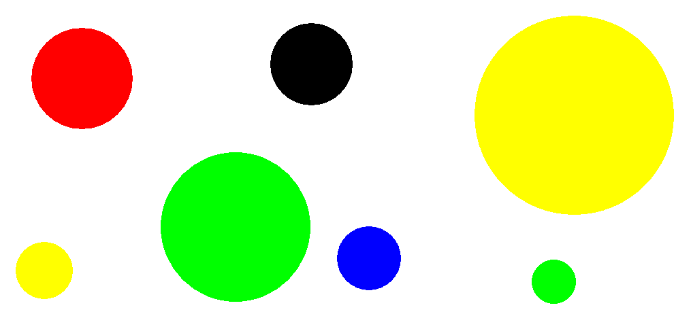

Hodiny jako teploměr
Koeficient 1
Karlík si takhle jednou hrál na doktora a v ruce měl teploměr, prohlížel si jej a
řekl si, že by bylo fajn, kdyby i jeho hodiny na stěně ukazovaly čas stejně,
jako se ukazuje teplota na teploměru. Zkuste Karlíkovi pomoci a napište pro něj program,
který bude ukazovat aktuální čas na 3 stupnicích (hodiny, minuty a sekundy zvlášť)
podobně jako teploměr.
- Hodiny jsou ukázány jako červený sloupec, stupnice je označena od 0 do 12. (12:30,
tedy půl jedné odpoledne, se na hodinách zobrazí stejně jako 0:30, tedy půl jedné
v noci)
- Minuty jsou ukázány jako modrý sloupec, stupnice je označena od 0 do 60.
- Sekundy jsou ukázány jako zelený sloupec, stupnice je označena od 0 do 60.
- Všechny stupnice musí být čitelné, minimální velikost hodin je 400 x 400 bodů (pixelů).
Jako vylepšení můžete naprogramovat (a získat tak další body):
- Plynulý pohyb sloupce hodin a minut (rostou s každou sekundou, minutou).
- Možnost nastavení času na hodinách (jen na hodinách, ne v celém počítači).
Jak by mohly takové hodiny vypadat se podívejte na obrázku, berte to jako inspiraci
:-)

Hodnocení
| Body |
Za co |
| 1 |
Program lze spustit |
| 1 |
Je zobrazena stupnice od 0 do 12 pro hodiny |
| 1 |
Aktuální hodina je reprezentována červeným sloupcem a je u správného čísla na stupnici |
| 1 |
Je zobrazena stupnice od 0 do 60 pro minuty |
| 1 |
Aktuální minuta je reprezentována modrým sloupcem a je u správného čísla na stupnici |
| 1 |
Je zobrazena stupnice od 0 do 60 pro sekundy |
| 1 |
Aktuální sekunda je reprezentována zeleným sloupcem a je u správného čísla na stupnici |
| 1 |
Sloupce plynule ukazují aktuální čas |
| 1 |
Na hodinách je možné nastavit čas |
| 1 |
Dokumentace, přehlednost kódu, ... |
Čtení morzeovky s výpisem na obrazovku
Koeficient 1
Napište program který umí luštit zprávy psané v morzeově abecedě.
Vstupní text obsahuje malá a velká písmena české abecedy, mezery, konce řádků a interpunkci
a je kódovaný následným způsobem:
- Pokud slovo začíná samohláskou, interpretuje se toto slovo jako tečka morzeovy abecedy.
- Pokud slovo začíná souhláskou, interpretuje se jako čárka morzeovy abecedy.
- Interpunkční znaménka oddělují jednotlivá písmena.
Příklady
Vstup:
Aby program; óóóóóhromil porotu tak musí;
umět;všechny,soubory jedním spuštěním.
Musí mít READ ,
ME alternativně help!
Výsledek: AJETOOK
Vstup:
ó n, á h l ý !d é š? ť j i ž ,z v í ,ř i l ,p r a c, h a č, i l
,á; l a, ň t e ,ď b ě ,ž í s h, o u f ,c e m ,G a z e, l k ,ú k,
r y t, ů m;
Výsledek: APKQGKQKAENGGYUKCMAKA
Od programu se očekává, že po startu umožní opakovaně vybírat
vstupní soubory a dešifrovaný obsah vypisovat na obrazovku. Tj. na
jedno spuštění zpracovat postupně více vstupních souborů.
Předpokládejte, že soubory jsou uloženy v kódování UTF-8.
Morzeova abeceda
A .- H .... N -. U ..-
B -... CH ---- O --- V ...-
C -.-. I .. P .--. W .--
D -.. J .--- Q --.- X -..-
E . K -.- R .-. Y -.--
F ..-. L .-.. S ... Z --..
G --. M -- T -
Hodnocení
| Body |
Za co |
| 1 |
Program lze spustit. Výběr textového souboru souboru je uživatelsky přívětivý - dialog/
pamatuje si původní adresář, ...
|
| 1 |
Program není nutno pro každý vstup znovu startovat. |
| 2 |
Zpracuje soubor prvnipriklad.txt. Výsledek PRVNIPRIKLAD. Budou-li 1-4 písmena špatně, tak jen jeden bod.
|
| 1 |
Zpracuje soubor druhypriklad.txt. Výsledek HHSSCHCHCHCHCHOO.
|
| 2 |
Zpracuje soubor tretipriklad.txt. Výsledek AMMOM |
| 2 |
Zpracuje soubor ctvrtypriklad.txt. Výsledek ULOHACTYRY. Budou-li 1-4 písmena špatně, tak jen jeden bod.
|
| 1 |
Dokumentace - přehlednost kódu, popis algoritmu, ... |
Počítání skvrn
Koeficient 1
V akademii věd v chemické sekci manuálně počítají olejové skvrny s
různou barvou na vodním filmu. Pomozte jim a napište program, který
jim tu práci usnadní.
Pro zjednodušení předpokládejte:
- že, stačí analyzovat pouze statický obraz v souboru PNG (maximální velikost 2000x2000
pixelů),
- že, okolní barva filmu je bílá,
- že, skvrny mají kruhový tvar a minimální velikost je 1x1 pixel,
- že, jedna skvrna má pouze jednu barvu,
- že, žádná skvrna nemá bílou barvu,
- že, může být více skvrn s téže barvy,
- že, skvrny nezasahují mimo analyzovaný prostor a ani se nedotýkají stěn,
- že, se skvrny nepřekrývají a ani se nedotýkají (mají mezi sebou minimálně 1 pixel
vodního filmu a to i v šikmém směru).
Dále zajistěte:
- výběr souboru PNG pomocí dialogového okna,
- výběr souboru lze provést opakovaně bez ukončení programu,
- program si pamatuje poslední použitý adresář.
Program musí:
- Spočítat a vypsat celkový počet skvrn.
- Spočítat a vypsat počet skvrn od každé barvy – barvy vyjádřete ve formátu
[red,green,blue] (řazeno od nejpočetnější barvy po nejméně početnou
barvu, dále řazeno dle formátu [r,g,b]).
- Seřadit skvrny podle velikosti a zobrazit je jako obrázek. Skvrny
uspořádejte do původní šířky obrázku ve vodorovných řadách od shora s
distancí 5 pixelů tak, aby nezasahovaly do okraje obrázků. Pokud výška
obrázku nestačí zvětšete ji.
Ukázka zadání: Vodní film se skvrnami – vstupní
soubor:

Ukázka řešení:
úkol 1: celkový počet skvrn: 7
úkol 2: [0,255,0]: 2x, [255,255,0]: 2x,
[0,0,0]: 1x, [0,0,255]:1x, [255,0,0]: 1x
úkol 3: 
V adresáři skvrny/ nejdete
soubory pro testování vaší úlohy a ukázkové řešení úlohy.
Hodnocení
| Body |
Za co |
| 1 |
Program lze spustit. Lze vybrat vstupní soubor za běhu programu opakovaně, není nutno
ho spouštět znovu a program si pamatuje/zobrazuje adresář minule zadaného souboru
|
| 1 |
Spočítá kolečka - 1 bod, když správně spočítá skvrny pro oba testovací soubory (koleckaExtrem.png
- 4 skvrny (POZOR!! v levém horním rohu jsou dvě malé skvrny 1 pixel a 6 pixelů -
nepřehlédnout), kolecka15.png - 15 skvrn) .
|
| 1 |
Spočítá kolečka - 1 bod, když správně spočítá skvrny pro oba testovací soubory (kolecka63.png
- 63 skvrn, kolecka217.png - 217 skvrn) .
|
| 1 |
Spočítá kolečka - 1 bod, když správně spočítá skvrny pro oba testovací soubory (kolecka295.png
- 295 skvrn, kolecka100000.png - 100000 skvrn) .
|
| 1 |
Zobrazí barvy ve formátu [r,g,b] a správné počty koleček téže barvy. Použít soubory
kolecka15.png (5x žlutá,4x červená, 3x modrá, 2x limetková, 1x černá), ostatní vizuální
kontrola: kolecka63.png, kolecka217.png, kolecka295.png
|
| 1 |
Dodrží předepsané pořadí - 1. dle počtu (od nejpočetnější barvy), 2. dle formátu r,g,b
(viz. příklad).
Obrázek Kolecka15.png [255,255,0]: 5x Yellow, [255,0,0]: 4x Red, [0,0,255]: 3x Blue,
[0,255,0]: 2x Lime, [0,0,0]: 1x Black
|
| 1 |
Zobrazí seřazená kolečka podle velikosti. 1.test - Obrázek koleckaVelik.png - všechny
skvrny mají stejnou velikost - řadí se podle barev viz. obr. koleckaVelik_Res.png.
|
| 1 |
Zobrazí seřazená kolečka podle velikosti. 2. test - Obrázek koleckaExtrem.png - jsou
tam skvrny s těmito velikostmi 1 pixel (černá), 6 pixelů (zelená), 149 pixelů (červená)
a 1893 pixelů (žlutá).
|
| 1 |
Test na velký počet skvrn. Obrázek kolecka10000.png obsahuje 100 000 skvrn - uspořádá
skvrny za sebou viz. obr. kolecka10000_Res.png .
|
| 1 |
Dokumentace - přehlednost kódu, popis algoritmu, ... |
Úřad
Koeficient 3
Na úřadě v očíslovaných kancelářích sedí úředníci.
Pokud jim donesete všechna razítka, která chtějí od jiných úředníků, dají vám to svoje
(samozřejmě až po vystání fronty, vyplnění formulářů a zaplacení poplatků, ale to
tu řešit nebudeme).
Napište program, který najde nejrychlejší cestu mezi jednotlivými úředníky tak, abyste
všechna potřebná razítka ve správném pořadí dostali.
Vstup
Úředníci jsou popsáni přirozenými čísly, která mají na svých dveřích (v každé kanceláři
je jen jeden úředník).
Stejným číslem označíme i razítko, které úředník vydává.
Kanceláře (tím pádem i úředníci a razítka) mají přirozená čísla v rozsahu 1..10000
.
Vstupem je soubor v následujícím tvaru:
Výstup
Pokud řešení neexistuje z důvodu že si úředníci, jejichž razítka potřebuji, navzájem
vyžadují razítka do kruhu, program tento kruh vypíše v následujícím formátu (místo
<u1> až <un> uvedete příslušná čísla):
Nelze vyresit - pozadavky do kruhu:
<u1> chce <u2>
<u2> chce <u3>
...
<un> chce <u1>
V ostatních případech bude výstupem seznam dveří, která je potřeba
postupně projít, tak abych u každého úředníka už měl všechna razítka,
která požaduje, a na konci měl všechna razítka, která potřebuji.
Čísla vypisujte jednotlivě po řádcích (na každý řádek jedno číslo).
Ukázky
Vstup:
1 2 3
1 2 3 4 5
2 3 4 5
3 4 5
4 5
Výstup:
5
4
3
2
1
Vstup:
1 2 3
1 2 3 4 5
2 3 4 5
3 4 5
4 5
5 3
Výstup:
Nelze vyřešit - požadavky do kruhu:
3 chce 4
4 chce 5
5 chce 3
Hodnocení
| Body |
Za co |
| 1 |
Program lze spustit, lze rozumně zadat vstup a zobrazit / uložit výstup |
| 1 |
Korektně vyřeší soubor i1.txt |
| 1 |
Korektně vyřeší soubor i2.txt |
| 1 |
Korektně vyřeší soubor i3.txt |
| 1 |
Korektně vyřeší soubor i4.txt |
| 1 |
Korektně vyřeší soubor i5.txt |
| 1 |
Korektně vyřeší soubor i6.txt |
| 1 |
Korektně vyřeší soubor i7.txt |
| 1 |
Korektně vyřeší soubor i8.txt |
| 1 |
Přehlednost, komentáře... |